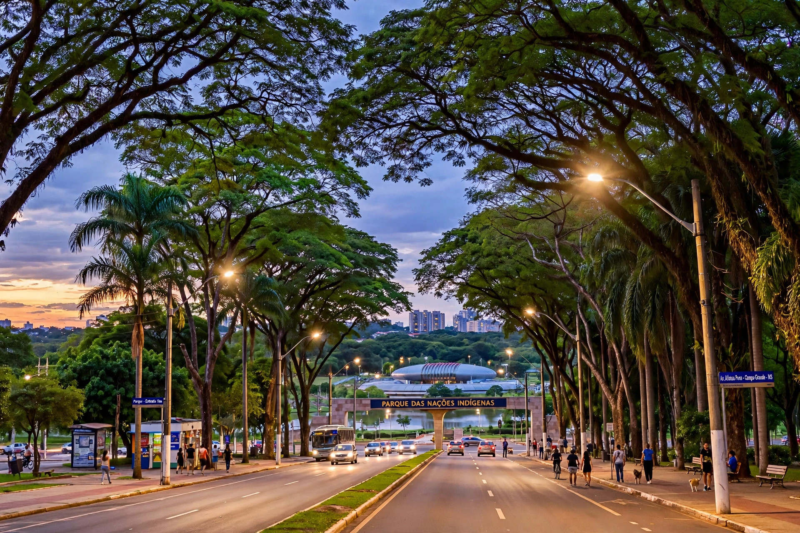

Campo Grande
Campo Grande is the capital and largest city of the Brazilian state of Mato Grosso do Sul, in the country's Central-West region. Nicknamed the "Cidade Morena" (Swarthy City) for its reddish soil, it is a major service and agricultural trade centre and a gateway for visitors heading to the Pantanal and Bonito.
| Country | Brazil |
|---|---|
| State | Mato Grosso do Sul |
| Founded | 1872; recognised as a city in 1899 |
| Population | about 900,000 |
| Elevation | about 590 m |

History
Campo Grande was founded in 1872 by José Antônio Pereira, who arrived with settlers from Minas Gerais seeking land on the central plateau. Its growth was driven by cattle ranching and later by the railway, which arrived in 1914. When Mato Grosso was divided in 1977, Campo Grande became capital of the new state of Mato Grosso do Sul in 1979.
Geography and climate
The city sits on a plateau of red earth near the watershed between the Paraná and Paraguay river basins. The climate is tropical savanna, with a wet summer and a notably dry winter.
Culture
Campo Grande's culture blends gaúcho, Paraguayan and Indigenous influences; tereré (cold mate) is widely consumed. The Parque das Nações Indígenas is one of Brazil's largest urban parks, and the city hosts the Bioparque Pantanal aquarium complex.